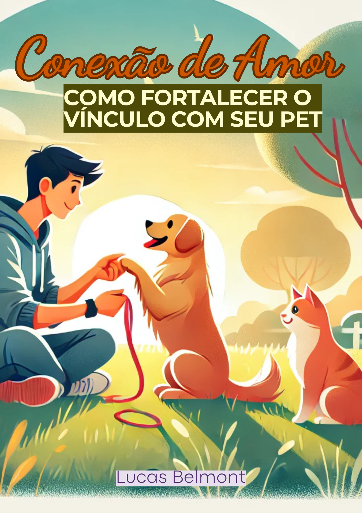

� 2. Conexão de Amor: Como Fortalecer o Vínculo com Seu Pet
👥 Público: Tutores de cães e gatos que sentem que oferecem cuidados físicos, mas ainda não conseguiram estabelecer uma conexão emocional verdadeira com seus pets. Pessoas que desejam entender melhor seus animais, criar laços mais profundos e transformar a convivência cotidiana em uma experiência de amor, compreensão e parceria.
- Orientações práticas e acessíveis
- Exercícios de convivência
- Dicas de rotina, alimentação, socialização e reforço positivo
- Estratégias emocionais e comportamentais para tutores
- 10 capítulos ilustrativos + conclusão e dicas extras
🔄 Transformação: Ao aplicar as orientações do ebook, o tutor passa a compreender os sinais emocionais do pet, aprende a respeitar sua individualidade e constrói, com gestos simples e diários, um relacionamento mais harmonioso, afetivo e responsivo — onde o pet se sente mais seguro, feliz e conectado com o tutor.